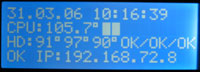
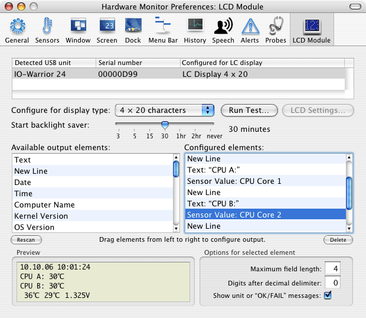

Controlling external alphanumeric displays |
There can be situations where it's not sufficient to monitor your system via an attached screen or remotely via the network. It can make sense to have monitoring capabilities directly at the computer's enclosure, especially if the system is not equipped with a screen. Servers running in a "headless" configuration, e.g. Xserve units which usually don't even have a graphics card, are a good example.
For this type of configuration, Hardware Monitor can send readings to an external alphanumeric liquid crystal display (LCD) which can be connected to the computer via USB interface. An example is shown in the following photo:

In addition to acquired readings from sensors and probes, Hardware Monitor allows you to specify additional data for output as well, for example the current time, or the IP address of a certain network interface. The example above shows date and time, four temperature values, a CPU load bar-graph, three S.M.A.R.T. status values, one RAID status value, and a selected IP address. The contents of the display is updated at the same rate as all other output channels of Hardware Monitor. The mentioned features are not available in Temperature Monitor.
Hardware Monitor supports the following hardware equipment only:
The Crystalfontz displays are in fact serial (RS-232) modules which come with an on-board USB-to-serial converter. You will need an additional device driver for your version of Mac OS X to allow the operating system to connect to this converter. The converter is made by Future Technology Devices International Limited (FTDI). Free drivers from FTDI are available at this web page: http://www.ftdichip.com/Drivers/VCP.htm. No additional software is required for the IO-Warrior solution.
We cannot answer any questions about
these hardware devices or their distribution. We do not promote
or sell these products. Regarding any questions about building or configuring
your own LCD output unit, please see the following web sites for
documentation and contact information:
http://www.codemercs.com/
http://www.crystalfontz.com/
http://www.logitech.com/
Information
about products not manufactured by us or about third-party websites is provided
for reference purposes only, and does not constitute our recommendation or
endorsement. Please contact the respective vendors for additional information.
We provide this only as a convenience to our users. We have not tested the
information found on these sites and make no representations regarding its
accuracy or reliability. There are risks inherent in the use of any information
or products found on the Internet, and we assume no responsibility in this
regard. Please understand that a third-party site is independent from us and
that we have no control over the content on that website.
In order to use a Crystalfontz USB module, you'll have to execute the following steps first:
WARNING: We have no influence on the quality of third-party drivers. The FTDI driver may cause Kernel Panics in Mac OS X, especially on systems with more than 2 GB of main memory. Kernel Panics will crash the operating system, causing data loss. If you have problems with the driver, please make sure you are using the latest available version, or contact the manufacturers for assistance.
WARNING: Neither the FTDI USB converter, nor the Crystalfontz module provide a valid serial number for the LCD unit to Mac OS X. For this reason, neither Mac OS X, nor Hardware Monitor can correctly track the module if you disconnect and then reconnect it to your system. Mac OS X may mistakenly identify a re-attached module as a new device which must be configured once more. This means all preference settings for the LCD module in System Preferences and in Hardware Monitor have to be set again.
Logitech does not allow that Hardware Monitor can control the LC display on their products directly. This is necessary, because the display can be used by several applications of different vendors simultaneously, so access to the display must be coordinated. The software Logitech LCD Manager version 3 must be installed before Hardware Monitor can detect and work with displays on Logitech products. This software is either shipped with the product, or can be downloaded for free from the website of Logitech. Please see the documentation that comes with the product for further information.
Hardware Monitor is supporting Logitech LCD products with either monochrome or color displays. If multiple devices are connected at the same time, Hardware Monitor will show the same display contents on all Logitech displays. You can use the LCD Manager pane in System Preferences to deselect particular displays from being used by Hardware Monitor. When using a color display, the output of Hardware Monitor will use the color white only. Only the display itself is supported, additional buttons which might be available on certain devices are ignored by the application.
Logitech does not support that applications can track different LCD products individually. For this reason, Hardware Monitor will only show one single entry named Logitech LCD Manager in its list of detected USB devices, even if multiple Logitech LCD products are connected. The serial number displayed by Hardware Monitor is always 00000000.
Changing the font or font size is currently not supported.
Configuration of an external LCD unit is very easy and can be done by simple drag-and-drop operations.
The LC Display will light up as soon as you switch the type menu from No display to one of the possible display types. The following test patterns are available:
If the selected LCD module is capable of controlling additional settings via software, the button LCD Settings will become active. After pressing it, a dialog sheet will open and you can set operating parameters as backlight brightness or display contrast.
You can additionally activate a "backlight saver" for each of your LCD modules which makes sure that the display will be switched off after your computer has not been in use for a specified time. Just select the desired time (or the value never) with the slider at Start backlight saver. It's a good idea to select the same time interval you have set for your screen saver in System Preferences but this is not necessarily required.
The IO-Warrior USB controller does not need any drivers to be accessible by Mac OS X. To make this technically possible, it has to act like a Human Interface Device (HID), similar to a mouse or keyboard. For this reason, Mac OS X will interpret certain signals of the IO-Warrior device as "user interaction", causing your system to no longer enter any sleep modes when the module is active. If you want to use automatic sleep mode for your screen or your computer, you'll have to enable the backlight saver for the IO-Warrior module. In this case, communication to the LCD module will stop after the selected time interval. At that moment, Mac OS X will no longer misinterpret the module as active user, and the standard sleep intervals will begin as expected. Note that the total sleep timeout interval will be the sum of the LCD backlight saver time and the sleep time you have configured in the Energy Saver pane of System Preferences.

After the display type has been configured, you can use the lower part of the window to select which output elements should be sent to the display. The left table shows you all output elements which are available on the local computer. The right table shows you the active elements which are currently being sent to the display. At the beginning, the right-hand table is empty. You can use the mouse, dragging elements from the left to the right table to configure the desired output step by step.
The selected output elements will appear immediately on the display, showing the current values. The display follows the update time interval you have set in the General pane of the preferences window. The output will appear additionally in the simulated Preview area in the lower left corner of the window.
The output elements are sent to the display in top to bottom order. You can rearrange the elements by dragging them in the right-hand table into any order you like. The following elements are available for output on the external display:
If you have selected a sensor or probe value for output, you can enter additional parameters at Options for selected element:
There are no restrictions in the output elements you select. You can use several different text elements for example, or display the same sensor value twice, at two different locations on the LCD. Hardware Monitor won't warn you if you are creating more output than fits on the display.
It is necessary to have Hardware Monitor running in order to send values to the external LCD unit. However, if you log out, Mac OS X will automatically quit your running applications. This means Hardware Monitor will be shut down and the display will be switched off. This is not helpful if you want to monitor a server, which is usually running in unattended mode with no user being logged in at the main screen.
You can solve this problem as follows:
You can also configure Hardware Monitor Remote to start the background service automatically during startup of Mac OS X. In this case, the display will automatically be switched on when the operating system is started. It is not necessary that a user logs in.
This feature cannot be supported for Logitech LCD products. These products require the Logitech LCD Manager software to run which is designed to work in a graphical user session only.
Hardware Monitor and Hardware Monitor Remote allow that you connect and disconnect external LCD units while they are in use. The applications can identify each unit and will automatically stop or restart sending data to each unit, if the displays are disconnected or reconnected to the computer, respectively.
Warning: Despite this feature, some versions of Mac OS X might not support this hot-swapping of devices! In the worst case, Mac OS X might crash with a kernel panic when you disconnect an LCD device in the middle of a running data transfer. This is a problem in the USB drivers of Mac OS X which cannot be prevented by Hardware Monitor. For this reason, it is recommended to disconnect LCD units only after you have quit the application which is controlling it.